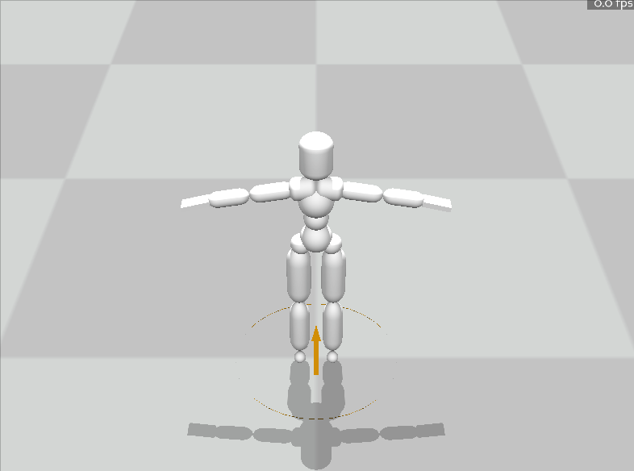
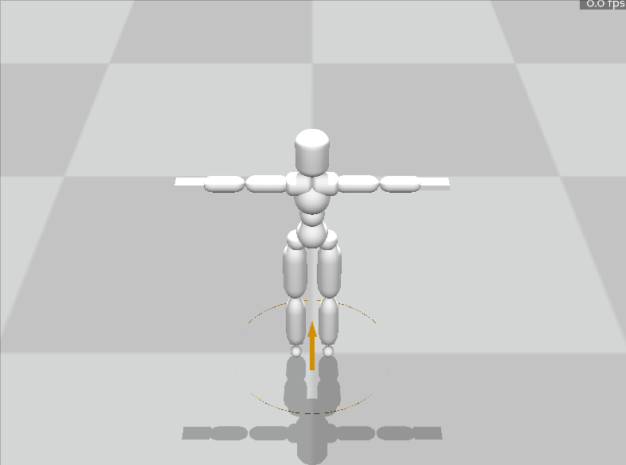

本次Project希望你对角色动画知识进行进一步应用，来制作一个较为完整的动画项目。我们给出两个题目供你选择，具体分为kinematics方向和physics方向。你可以延续lab2的可交互动画的内容，去构建一个更加完善的Motion Graph，或者使用Motion Matching来实现更为精准实时的控制；也可以延续lab3的物理控制的角色动画内容，来实现更加复杂的操作角色的效果（可以加上root force）或者更加真实的控制行为（不加root force）。当然你也可以把kinematics那边的任何方案移植到physics这边。
Windows建议使用conda等建立新的虚拟环境
conda create -n MoCCA python=3.10
conda activate MoCCA
pip install "numpy<2" scipy panda3d
MacOS环境建议使用virtualenv建立新的虚拟环境
python3 -m venv MoCCA
source MoCCA/bin/activate
pip install "numpy<2" scipy panda3d
如果下载过慢可使用清华镜像源安装 ( https://mirrors.tuna.tsinghua.edu.cn/help/anaconda/ )
本作业只允许使用
numpy，scipy以及其依赖的库。评测时也以此为准。作业文件中请不要import除此之外的库。
MoCCASimuBackend为本次作业的仿真后端。目前提供了Windows上编译好的动态链接库（python3.8、3.10、3.12版本），以及 MacOS上编译好的动态链接库 （python3.10、3.12版本），请选择这几个python版本使用。
如果在 import MoCCASimuBackend 时遇到 numpy 有关的报错，请更新 numpy 版本 >=1.23 且 <2。
在 MacOS 上，如果运行遇到
ModuleNotFoundError: No module named '_tkinter'或类似错误，你可能需要安装 python-tk。可以使用 homebrew 安装，命令brew install python-tk。关于如何安装 homebrew，以及如何安装对应 python 版本的 python-tk，请自行搜索解决。
目前暂不提供 linux 版本的预编译库，如需要可以自行编译安装。下载 MoCCASimuBackend-update.zip，并在解压后文件夹中使用
pip install .命令来进行安装。安装遇到问题，请自行搜索解决。
完成后可以运行task0_build_and_run.py，可以调节simu_flag来选择是否使用physics来更新。你将会看到一个地面上的黄色圆圈。你可以通过键盘或左手柄来控制它的移动。可以通过鼠标左右中键或右手柄操作相机视角。(检测到手柄会无视键盘输入，具体情况请参考task_0_build_and_run.py的注释.) 如果simu_flag=0, 你将会看到一个起始T-pose的角色，角色将一致保持T-pose。如果simu_flag=1，随着物理仿真他会跌倒在地上。


在motion_material文件夹我们提供一些基本的动作数据。包含一些短motion和两个长motion。你可以使用blender等软件查看长motion，并剪辑出需要的短motion。
短motion:
长motion主要是walk和run及其镜像动作。提供的短motion已经大概对齐了相位，你也可以再进行一些精细的裁剪。 你也可以自行去SFU-dataset上去选取你觉得有意思的短motion，或者去LaFaN-dataset选择你觉得不错的长motion。如果你选择自己找新动作，可能需要你对动作进行重定向。
- 如果你觉得开源数据集中的动作不够丰富，你也可以用我们提供的动作捕捉设备自己采集动作。
- 如果采用这种方式，请提前结成至少3人的小组向助教申请使用动作捕捉设备，小组中一人作为动捕演员，其他几人进行动作数据的导出/后处理/重定向等环节。
- 每个小组共用动作数据，但需要每个人独立完成自己项目的其他部分。考虑到目前设备容量，我们接受最多四组申请，先到先得，以结组后向助教申请的时间为准。
- 如果没有合适的组队伙伴，也可以单独申请。我们会优先接受小组申请，在资源允许的情况下，按申请顺序处理单独申请同学的采集需求，同样先到先得。
在lab2的interactive_character的任务中，我们给出了一个简单的Motion Graph。里面给出的5个动画clip被手工修理成起始帧和结束帧的角色位姿接近的样子，以方便进行直接拼接。这样的图是手工设计出来的。自动地去生成动画之间的连接关系图势必会减轻动画师的工作量，并且可能可以发掘出一些手工连接动画时候的新的连接方式。比如说，我们知道走路片段可以分别衔接跑步或者踢腿，但是自动去算连接点的算法，可能会找出一个transit point来使得跑步动作去衔接上踢腿动作，能实现一种较为连续的连接。同时，由于每个片段的动作都是由动作捕捉设备采集出来的，最后的动作效果也会比较合理。
在有长motion的情况下，Motion Matching方法不需要对动作进行切割，也不需要自己定义动作转移,搭建起来甚至更加简单。其核心思想是，不再人为指定动作之间的转换关系，而是单纯地指定目标动作，而从当前动作到目标动作之间的插帧，是算法从动作数据库中自动找出一个最佳匹配，或者根据已有的动作数据，基于插值生成一个新的，最合理的动作。
Motion Matching相关背景知识可以参考Toturial和对应代码仓库。
一些小Tips:
smooth_utils.py里给出了计算角速度的方法以供参考。smooth_utils.py里给出了一个实现。基于机器学习的kinematics动画进行可交互的过程大致可以认为是，通过学习合理的动作的分布，并将其和用户输入对应起来。
能够实现交互角色动画的learnning方法有很多，我们简单列出一些，你可以根据下面的某一个方法来进行复现
在lab3中的task2我们使用了一个在root上加一个外力的方法实现了磕磕绊绊地走。你可以继续在root上加一个力来保证平衡来完成更多的动作，比如说跑步，转弯，踢腿，以及他们之间的转换动画。
在lab3中的task3我们取消了root上的外力，而让角色可以保持平衡。你可以继续延申下去，来在不使用root residue force等破坏物理规律的情况下使得角色可以能够基本走路。
由于给出的五个方案的难度有差别，我们会根据方案的难度，以及最终动作效果来进行打分。较难的方案的基础分高，并且相应的动作质量可以酌情降低。各个方案的分数上限都是100分。当然你也可以选择其他方案，请提前联系助教确认难度。
动作效果评价将包括以下几个因素：
- 动作对控制信号的响应速度，例如转向到位的速度
- 动作的物理准确性，例如是否脚底打滑
- 不同动作之前切换的流畅程度，以及是否有明显的跳变
- 动作的种类和自然感
以下是五个方案的基本要求，以及对应完成基本要求的得分。其他自选方案的基础分请咨询助教。
方案一 (Motion Graphs):
完成以下任务可获得基础分 75 分
- 使用 5 个以上与 lab2 中提供的数据不同的动作片断
- 支持走、跑、转向、停止、以及任意非走和跑的动作，以及这些动作间的切换
- 角色可以响应键盘/摇杆的方向控制。
完成以下内容可以在75分基础上额外获得基础分加分，最多10分。
- 参考
viewer\viewer_new.py中的create_marker函数添加新的键盘响应以触发走、跑之外的其他动作 (例如通过空格出发跳跃等)，每个动作+1分，最多+5分。- 将角色上半身和下半身分开控制，使得角色可以组合新的动作，并使用键盘触发 （例如构建上下半身单独的 motion graphs），+5分
- 基于 MotionGraph 论文或其他论文实现了从运动数据自动建立动作图。请同时提交自动建图的代码，+5分。
方案二 (Motion Matching):
实现 Motion Matching 算法，并完成以下任务可获得基础分 85 分
- 至少支持走、跑、转向动作，以及他们之间的切换
- 能及时响应跑、走、转向的键盘/摇杆控制
- 转向时有明显的转向动作，整体动作没有明显的跳变
- 提供实现方法说明
方案三 (Learning-based Methods):
完成以下任务可获得基础分 85 分
- 利用神经网络训练动作生成模型，支持走、跑、转向动作，以及他们之间的切换
- 能及时响应跑、走、转向的键盘/摇杆控制
- 转向时有明显的转向动作，整体动作没有明显的跳变
- 提交预处理和训练的代码，以及训练好的模型
- 提交网络结构和训练方法的说明
方案四 (PD Control with Residual Force):
通过在 root 上加 residual force 保持平衡，使角色可以在仿真中跟踪上述方案一 ~ 方案三中任意方案获得的动作，可以获得 +5 分的基础分。要求
- 完成方案一 ~ 方案三中对应方案的基础要求
- 角色在移动过程中没有明显的倾倒、弹跳等问题
方案五 (Physics-based Control):
在不使用任何 residual force 的情况下，角色可以保持平衡，并以双脚步行的方式向前移动，在摔倒前至少行走
5米，获得基础分90分。
通过强化学习或最优控制等方法，学习控制策略，使角色可以长时间行走，并可以承受一定的干扰（如水平随机推力，要求提供施加干扰的接口），获得基础分
95分
需要提交的文件是answer_project.py和关于项目的报告。如果你对于task1_project.py或者其他文件进行修改了，请在报告中说明如何使用你的文件。请同样在报告中说明(pdf或者markdown格式)必要的实现细节和最后的效果，如果你使用了额外的数据集，也请一并附上来。最终上交时请打包成zip格式。
严禁作弊。如果你的实现方法和效果与往届同学/开源代码的实现雷同，助教会进行核实，一经查实课程按不及格处理。